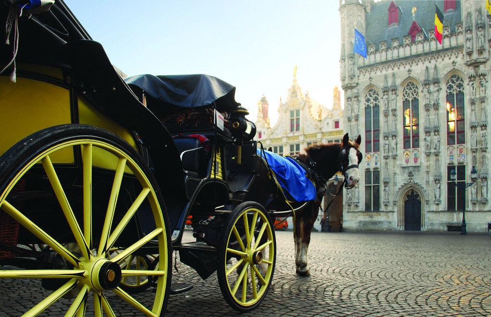

旅行社有限公司（许可证编号：L-CQ-CJ00019）于2009年正式进驻重庆，是1旅游全资子公司，是全国第一家分公司。依照集团公司“八统一”原则：统一采购、统一产品、统一广告、统一财务、统一人事、统一选址、统一形象、统一组团。给全市人民带来真正的“优质实惠，尊贵不贵”的旅游服务。
全国旅游连锁机构，旅游行业的龙头企业，中国旅游行业的领航者。“2007、2008、2009全国百强旅行社”荣誉。
中国最具创新精神的旅游机构，首创中国领先的旅行社行业运营模式，制定全新宏伟的战略发展目标，引用全新管理运营机制，全面开拓旅游市场的多方合作，创建三赢合作平台。
目前全国共有18家分公司，门店超过2000家，收客人数过百万，营业额突破50亿。已初步实现了经营规模化和全国发展规划目标，正逐渐向全国性综合旅游集团公司转型发展，1旅游未来企业发展愿景目标是将1旅游打造成中国最大的连锁旅游服务商之一。
曾荣获2010年度影响重庆旅游发展十大旅行社，2011年度最受市民喜欢的品牌旅行社，2011重庆城市影响力旅行社，重庆市总商会旅游商会副会长单位。被重庆市教育委员会和重庆市旅游局联合授予“重庆市中等职业教育旅游专业教师企业实践基地”、“重庆市旅游职业教育现代学徒制人才培养模式重点试行单位”等称号。新近荣获“新女报·十周年十大铂金旅行社”称号。荣获“2010年度业绩优秀营业部”、“2011年度业绩优秀营业部”称号。